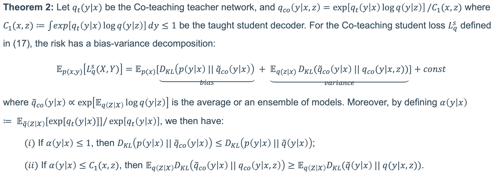

Comparisons of regression between standard MLP and MLP trained with Nested Dropout and Dropout on a synthetic noisy label dataset.
(a) MLP with standard training;
(b-d) predictions of MLP+Nested using only the first channels;
(e-h) predictions of MLP+Dropout with drop ratio .
Supervised learning can be viewed as distilling relevant information from input data into feature representations.
This process becomes difficult when supervision is noisy as the distilled information might not be relevant.
In fact, recent research shows that networks can easily overfit all labels including those that are corrupted, and hence can hardly generalize to clean datasets.
In this paper, we focus on the problem of learning with noisy labels and introduce compression inductive bias to network architectures to alleviate this over-fitting problem.
More precisely, we revisit one classical regularization named Dropout
and its variant Nested Dropout.
Dropout can serve as a compression constraint for its feature dropping mechanism,
while Nested Dropout further learns ordered feature representations w.r.t. feature importance.
Moreover, the trained models with compression regularization are further combined with Co-teaching for performance boost.
Theoretically, we conduct bias-variance decomposition of the objective function under compression regularization.
We analyze it for both single model and Co-teaching.
This decomposition provides three insights:
(i) it shows that over-fitting is indeed an issue in learning with noisy labels;
(ii) through an information bottleneck formulation, it explains why the proposed feature compression helps in combating label noise;
(iii) it gives explanations on the performance boost brought by incorporating compression regularization into Co-teaching.
Experiments show that our simple approach can have comparable or even better performance than the state-of-the-art methods on benchmarks with real-world label noise including Clothing1M and ANIMAL-10N.
Video
Presentation on Nested+Co-teaching (7min)
Method
Overview
Overview of our method. In stage one, the hidden activation is computed by a feature extractor .
Dropout/Nested Dropout is applied to by masking some of the features to zeros, i.e., .
The compressed feature is then fed into the network structure , which can simply be a fully connected layer (FC), to perform the final prediction.
In stage two, the two base networks are fine-tuned with Co-teaching.
Theoretical Analysis
Bias-variance decomposition of a single network
Intuitively, the bias term in the equation in Theorem 1 determines how close the average model is to and is the conditional probability for the noisy , while the variance term promotes a consensus among individual models.
The variance term also serves as a regularization to combat label noise in the sense that the consensus downweights the influence of the incorrect labels.
Unlike learning with clean data, we do not expect low bias as it indicates model's over-fitting to label noise.
Instead, we rely on the variance term and early stopping to provide good training signals.
Bias-variance decomposition of our two-stage model
The condition in Theorem 2 equals to where the right-hand side measures the difference between a single training network and the teacher network of Co-teaching.
The larger the difference, the smaller the value, and vise versa.
Hence, to obtain smaller bias term than that in Theorem 1, the sample selection of Co-teaching only chooses those with large so as to meet the condition.
As by definition, if further , i.e., with larger right-hand side value, then we will have larger variance term than that in Theorem 1.

Conclusion
Theorem 2 demonstrate that choosing samples with large during selection of Co-teaching leads to smaller bias term and larger variance term than those in Theorem 1.
That is, the impact of the bias term can be even diminished.
Consequently, the sample selection mechanism during Co-teaching's cross-update process helps in further preventing networks from over-fitting on noisy labels, thus achieving better performance on clean datasets.
Experiments
CIFAR-10 & CIFAR-100 with synthetic label noise
Test accuracy (%) of state-of-the-art methods under (a) symmetric noise on CIFAR-10 and CIFAR-100, (b) 40% asymmetric noise on CIFAR-10.
All approaches are implemented with PreAct ResNet-18 architecture.
Clothing1M with real-world label noise
Test accuracy (%) of state-of-the-art methods on Clothing1M (noise ratio ∼38%).
All approaches are implemented with ResNet-50 architecture.
Results with ``*" use a balanced subset or a balanced loss.
ANIMAL-10N with real-world label noise
Average test accuracy (%) with standard deviation (3 runs) of state-of-the-art methods on ANIMAL-10N (noise ratio ~8%). All approaches are implemented with VGG-19 architecture.
Results with ``*" use two networks for training.
Resources
BibTeX
If you find this work useful for your research, please cite:
Acknowledgements
This work is jointly supported by EU: The research leading to these results has received funding from the European Research Council under the European Union's Horizon 2020 research and innovation program / ERC Advanced Grant E-DUALITY (787960). This paper reflects only the authors' views and the Union is not liable for any use that may be made of the contained information.
Research Council KU Leuven:
Optimization frameworks for deep kernel machines C14/18/068
Flemish Government:
FWO: projects: GOA4917N (Deep Restricted Kernel Machines: Methods and Foundations), PhD/Postdoc grant
This research received funding from the Flemish Government (AI Research Program).
Ford KU Leuven Research Alliance Project KUL0076 (Stability analysis and performance improvement of deep reinforcement learning algorithms)
EU H2020 ICT-48 Network TAILOR (Foundations of Trustworthy AI - Integrating Reasoning, Learning and Optimization)
Leuven.AI Institute